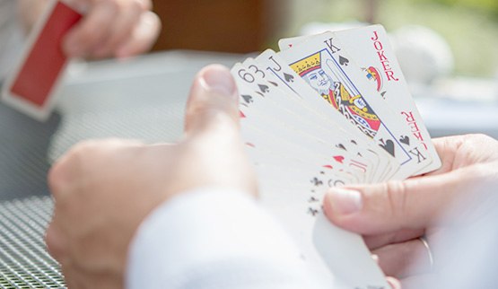

UILENSPIEGEL VZW Patientenvereniging
Een ‘+’Vriend ondersteunt psychosegevoelige mensen bij hun herstel, zo intensief als nodig. Hij/zij stelt zich dienstbaar op en sluit aan bij de wensen, de mogelijkheden en de krachten van de persoon en zijn omgeving.

Als jij ‘+’Vriend wil, neem dan contact op met Thomas Roose via thomas@uilenspiegel.net of bel 0484/814.408.
Wanneer kan een '+'Vriend iets voor jou zijn:
Vzw UilenSpiegel gaat je koppelen aan een persoon die ongeveer van jouw leeftijd is, die dezelfde interesses heeft, en die bovendien ervaring heeft in het leven met een psychische kwetsbaarheid (de ‘+’-vriend).
Jouw ‘+’-vriend zal bereikbaar zijn voor jou en je mee nemen naar activiteiten die je leuk vindt: wandelen, een gesprek, naar de cinema gaan of samen klusjes doen…
De ‘+’-vriend biedt vanuit zijn of haar ervaring ondersteuning op moeilijke momenten. Samen zoek je naar manieren van omgaan met een psychische kwetsbaarheid. De tijd die je ‘+’-vriend erin steekt zal afhangen van wat je nodig hebt en van de aangegeven grenzen van de ‘+’-vriend.
Als jij ‘+’Vriend wil, neem dan contact op met Thomas Roose via thomas@uilenspiegel.net of bel 0484/814.408.
Als jij ‘+’Vriend wil worden neem je best contact op met Thomas Roose via thomas@uilenspiegel.net of bel 0484/814.408.
Vzw UilenSpiegel gaat je koppelen aan een psychosegevoelig persoon die ongeveer van jouw leeftijd is en die dezelfde interesses heeft.
Als ‘+’Vriend probeer je bereikbaar te zijn voor de deelnemer, plan je samen activiteiten die hij/zij leuk vindt: wandelen, samen klussen doen of je biedt vanuit jouw ervaring ondersteuning op moeilijke momenten. Je zoekt samen naar manieren van omgaan met een psychische kwetsbaarheid. De tijd die je erin steekt zal afhangen van wat je deelnemer nodig heeft en van je eigen aangegeven grenzen.
Je neemt maandelijks deel aan de ondersteuningsmomenten te Brussel.
Een ‘+’Vriend is een persoon met ervaringskennis in de geestelijke gezond- heid die één-op-één gekoppeld is aan een persoon met psychosegevoeligheid. Deze deelnemers persoon wenst op bepaalde momenten in het leven een coach.
Een ‘+’ Vriend sluit een vrijwilligersovereenkomst af bij UilenSpiegel en krijgt een forfaitaire vergoeding en je verplaatsingskosten.
Als jij ‘+’Vriend wil worden neem je best contact op met Thomas Roose via thomas@uilenspiegel.net of bel 0484/814.408.
Stuur ons snel jouw gegevens en wij kijken hoe we jou kunnen helpen of hoe jij ons kan helpen!